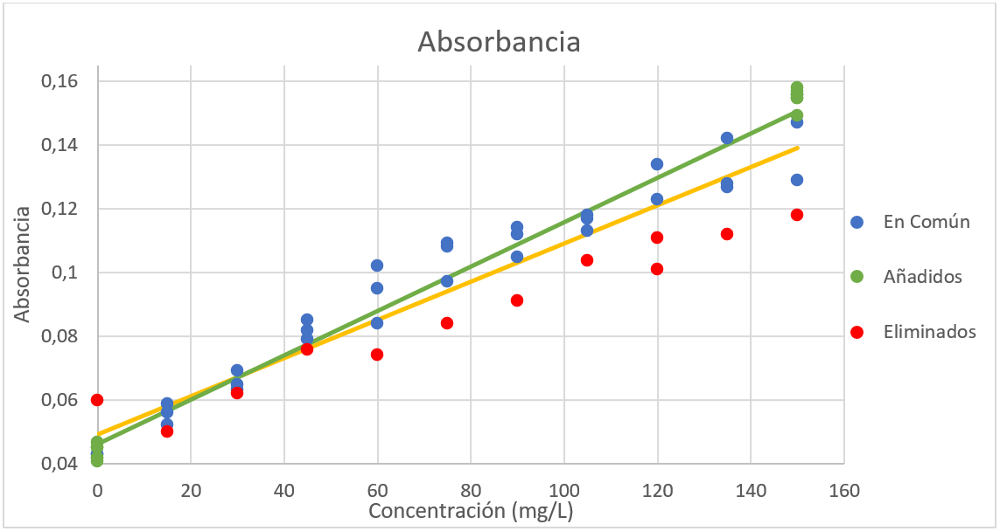
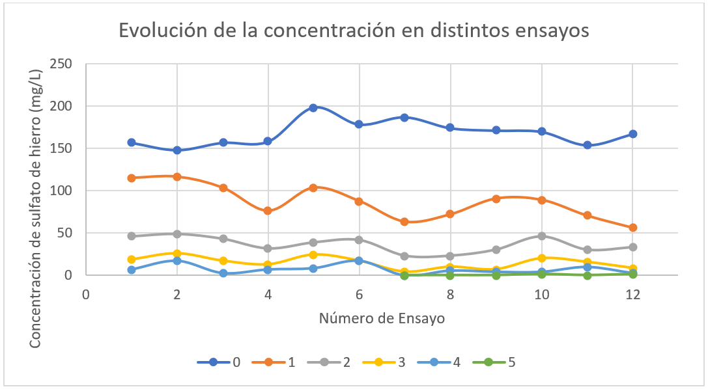
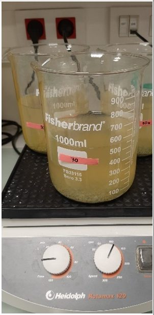
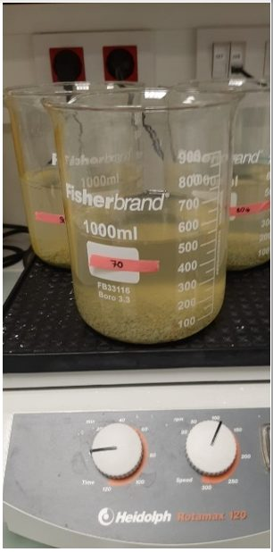
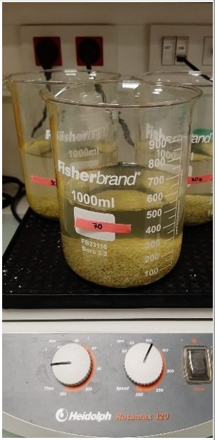
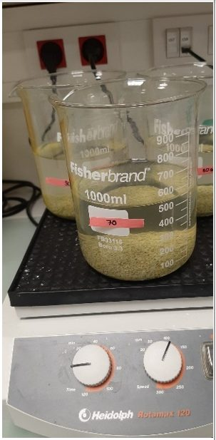
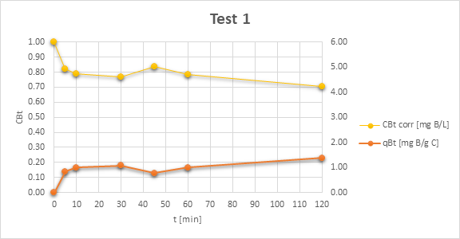
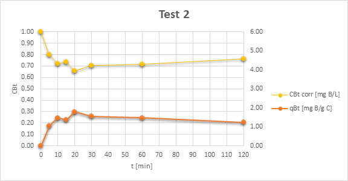
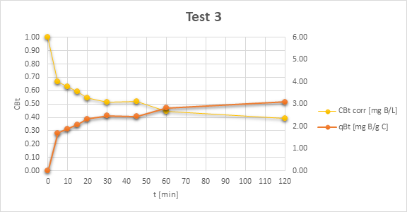
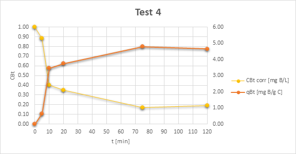

Ebiya Aidu
Ebiya AiduIkuspegi orokorra
Ingeniaritza Biomedikoko graduko laborategi-praktiken proiektua. Burdina uraren kutsatzaile arrunta da, eta zeolita naturala metal-ioiak harrapa ditzakeen mineral porotsu merkea da. Proiektuak aztertzen du zeolita naturalak zein ongi adsorbatzen duen burdina, bi neurketa-modu alderatzen ditu (espektrofotometria eta fenantrolina metodo estandarra) eta egiaztatzen du zeolita aldez aurretik gatzean (NaCl) blaitzeak eta ale finagoak erabiltzeak emaitza hobetzen duen.
Ikasle baten laborategi-txostena da, ez argitaratutako azterlana. Lehen metodoak ez zuen funtzionatu, txostenak berak azaltzen duen bezala, eta azken metodoa lau saiakuntzatan egin zen, errepikapenik aipatu gabe.
Txosten osoa
Praktiken jatorrizko txostena gaztelaniaz, irudi, taula eta R kodearekin. Datu pertsonalak kendu dira. “Berrikuspena · Clauderekin idatzia” blokeak geroago gehitu dira, eta ez dira jatorrizkoaren parte.
1. Introducción
Debido a la actividad de las industrias, zonas mineras y fabricantes de baterías entre otros, la afluencia continua de materiales tóxicos, como los metales pesados, desembocan en masas de agua, lo que provoca su contaminación. Los metales pesados pueden acumularse en los organismos vivos como elementos tóxicos y estables que con frecuencia causan diversas enfermedades, resultando así un peligro para la salud pública. Entre los metales pesados más comunes, el hierro ha cobrado importancia debido que puede causar graves problemas sanitarios, tecnológicos y económicos.
El límite en concentración de hierro (Fe) establecido por la mayor parte de las reglamentaciones nacionales y supranacionales en el agua potable es 0,02 mg/L [1]. La alta concentración de hierro en el agua presenta algunos inconvenientes, como la decoloración del agua, la mancha en los accesorios de fontanería y el sabor metálico [2].
Por lo tanto, se precisan soluciones para reducir o eliminar la concentración de metales pesados en el agua contaminada. Una posible solución puede venir por la zeolita natural o la zeolita sintética.
Las zeolitas son aluminosilicatos formados por una red tridimensional de tetraedros SiO4 y AlO4 - , conectados entre sí por átomos de oxígeno comunes y presentan altas capacidades de adsorción debido a su estructura porosa y sus altas áreas superficiales. Esta carga negativa les confiere la capacidad de capturar cationes, así como metales pesados, mediante el intercambio de iones. Sus bajos costes y su capacidad de regeneración sin perder las propiedades de adsorción lo hacen ser una solución atractiva como accesible.
En los últimos años se han realizado distintos estudios para buscar una solución a estos problemas mediante el uso de la zeolita. Estos estudios sintetizan la zeolita a través de caolinita y monitorizan principalmente tres parámetros: tiempo de contacto, concentración inicial de hierro y la masa de zeolita. En los resultados obtenidos por [3] pudieron obtener una adsorción de 5.6 mg de hierro por gramo de zeolita. En otros estudios que emplearon zeolita natural, se monitorizaron del mismo modo principalmente los tres parámetros mencionados además de la temperatura y el tamaño de la partícula. Adicionalmente, en distintos estudios se muestra la importancia de reducir el pH para evitar la precipitación del hierro. Sin embargo, estos estudios se centran esencialmente en eliminar distintos metales del agua en función de los parámetros mencionados, enfocándose mayormente así en factores externos. Así pues, es de interés conocer la posibilidad de aumentar la capacidad de adsorbancia de la propia zeolita.
Por tanto, en estas prácticas se pretenden analizar las propiedades adsorción de la zeolita natural siendo así, tal y como se ha mencionado, una alternativa económicamente viable. Los ensayos se realizaron mediante dos métodos distintos: espectrofotometría y fenantrolina. Adicionalmente, para aumentar la capacidad de adsorción de la zeolita, se propuso dopar con sal (NaCl) previo a cada ensayo, debido que distintos estudios verifican la capacidad de interacción y regeneración.
Por todo ello, esta replica de los estudios con la zeolita natural mediante las dos técnicas de medición y dopaje carentes en los estudios, podría dar paso a futuros proyectos o investigaciones que podrían explorar las propiedades de la zeolita con mayor profundidad empleando estos protocolos.
Estas prácticas realizaron en Miramón, laboratorio de la universidad de Navarra y en CEIT, un centro de investigación vasco situado en Donostia-San Sebastián.
1.1 Estructura
En primer lugar, como apertura de la memoria técnica, se presenta una breve introducción donde se sitúa el marco de este proyecto. También se presentan en esta parte los principales objetivos de su realización.
A continuación, en el apartado de materiales y métodos se especifican los protocolos llevados a cabo, así como los materiales que se necesitaron para ello.
Posteriormente, se encuentran los resultados y sus respectivas discusiones obtenidas con ambos métodos.
Por último, se halla un capítulo dedicado a las conclusiones donde se engloban los puntos principales de las prácticas y las posibles continuaciones del proyecto.
1.2 Objetivos
El objetivo de la práctica fue estudiar las propiedades de la zeolita como material adsorbente del Fe mediante los siguientes pasos:
- Evaluar diferentes métodos para la medida y seguimiento de iones de Fe disuelto.
- Estudiar la capacidad máxima de adsorción de Fe en la zeolita.
- Estudiar la evolución temporal de la adsorción del Fe en la zeolita.
2. Materiales y Métodos
2.1 Preparación de NaCl al 10% de peso
Tal y como se ha mencionado anteriormente, previo a iniciar los ensayos se determinó dopar la zeolita. Para ello, en este apartado se presenta su protocolo.
Primero, se decidió fijar la proporción de gramos de NaCl por mL de H2 O para todas las prácticas limitando así la variabilidad. Para elegir el porcentaje se basó en los trabajos anteriores, el cual fue del 10%.
Además de esta relación, se fijó también la proporción entre la sal y la zeolita para seguir minimizando la variabilidad y poder obtener conclusiones más certeras. Al igual que el porcentaje de peso, esta relación se obtuvo de los trabajos anteriores y fue de 0.25 g de NaCl por cada gramo de zeolita.
Por tanto, durante los ensayos, se emplearon las ecuaciones 2.1 y 2.2 para conocer la cantidad de sal y consecuentemente agua en función de la masa de zeolita.
NaCl = (α g zeolita × 0.25 g NaCl) / (1 g zeolita) = β g NaCl (2.1)
H₂O = (β g NaCl × 100 mL H₂O) / (10 g NaCl) = γ mL H₂O (2.2)
2.2 Cálculo de la recta de calibración
Para poder conocer las concentraciones y por tanto los resultados, era preciso crear una recta de calibración el cual consiste en dar una relación entre la absorbancia de la disolución con la concentración. Para poder calcular esta recta, se elaboró una tabla con las relaciones conocidas empleando las siguientes ecuaciones:
Cantidad de Fe₂(SO₄)₃ = (Cd / C0) × Vt (2.3)
Cantidad de agua = Vt − Cantidad de Fe₂(SO₄)₃ (2.4)
Siendo Cd la concentración deseada para cada una de las muestras, C0 la concentración inicial de 150 mg/L de sulfato de hierro y un volumen total Vt de 1 mL. Se decidió emplear este rango debido que era la concentración máxima empleada en los experimentos. De esta manera, se pudieron conseguir resultados más precisos. Adicionalmente, se decidió realizarlo por triplicado para obtener mejores resultados minimizando los valores irregulares causados por trabajar con cantidades pequeñas. Para obtener con precisión la ecuación de la recta, se realizó en R una regresión lineal, A.1.
| Número de muestra | Concentración (mg/L) | Sulfato de hierro (mL) | Agua (mL) |
|---|---|---|---|
| 1 | 150 | 1 | 0 |
| 2 | 135 | 0.9 | 0.1 |
| 3 | 120 | 0.8 | 0.2 |
| 4 | 105 | 0.7 | 0.3 |
| 5 | 90 | 0.6 | 0.4 |
| 6 | 75 | 0.5 | 0.5 |
| 7 | 60 | 0.4 | 0.6 |
| 8 | 45 | 0.3 | 0.7 |
| 9 | 30 | 0.2 | 0.8 |
| 10 | 15 | 0.1 | 0.9 |
| 11 | 0 | 0 | 1 |
Table 2.1: Cantidades de sulfato de hierro y agua destilada.
Cantidad de Fe₂(SO₄)₃ = (0.1 L × 150 mg) / (1 L) = 15 mg (2.5)
Por tanto, para partir de una concentración de 150 mg/L de sulfato de hierro en polvo, se pesaron en la balanza 15 mg, añadiendo 0,1 L de agua destilada y mezclándolo en el agitador magnético a temperatura ambiente.
Antes de obtener las muestras, se mezcló el vaso de precipitados para homogeneizar la disolución. Se pipetearon los volúmenes calculados en tubos eppendorf y se volvió a mezclar para homogeneizar mediante “up-down”.
Por último, se pipetearon 150 µl de la disolución desde los tubos eppendorf a la placa de 96 pocillos y se analizaron en el espectrofotómetro a 510 nm.
2.3 Método de absorción por espectrofotometría
Tal y como se indica en la introducción y objetivos, mediante este método se trató de comprobar si era posible analizar las propiedades de la zeolita, así como encontrar la mínima masa de zeolita donde este, adsorbiese la mayor cantidad de sulfato de hierro. Para ello, se redujo la masa de zeolita en cada experimento y se mantuvo constante (150 mg/L) la cantidad de sulfato de hierro. Cuando se observase que la cantidad de sulfato de hierro en la disolución no era nula, se concluiría que la zeolita se habría saturado. La capacidad máxima de adsorción se calcula mediante la siguiente ecuación:
Qe = (C0 − Ce) × V / M (2.6)
Donde, Qe es la capacidad máxima de adsorción, C0 es la concentración inicial de Fe, Ce es la concentración en el equilibrio (concentración final), V es el volumen de disolución y M es la masa de zeolita.
Así pues, para todos los ensayos se preparó una concentración de sulfato de hierro de 150 mg/L. Debido que, se emplearon vasos de precipitado con 0,5 L de agua destilada, el cálculo realizado fue el siguiente:
Cantidad de Fe₂(SO₄)₃ = (150 mg × 0.5 L) / (1 L) = 75 mg (2.7)
Por tanto, se pesaron 75 mg de sulfato de hierro en la balanza de precisión y se añadieron 500 mL de agua destilada en el vaso de precipitado. Se colocó en el agitador magnético hasta disolver y obtener una disolución homogénea a una temperatura aproximada de 75ºC. Por otro lado, con una pipeta Pasteur se añadió ácido clorhídrico no concentrado reduciendo así el pH hasta 4.
Previo a mezclar esta disolución con la zeolita, tal y como se ha aclarado en el apartado anterior, había que acondicionar la zeolita con NaCl. Para ello, se pesó la correspondiente masa de zeolita en la balanza de precisión y se limpió con agua destilada. A continuación, se mezcló con NaCl al 10% y se dejó reposar hasta 24 horas. Transcurrido este tiempo se retiraba la solución filtrando con un colador y se incorporaba a la disolución de sulfato de hierro para empezar el ensayo.
Una vez puestos en contacto la zeolita con el sulfato de hierro, los vasos se colocaron en el orbital shaker a ligeramente más de 100 rpm. Se tomaron muestras de 1 mL cada hora entre 4 y 5 horas y se almacenaron en tubos eppendorf.
Por último, se homogeneizaron las muestras mediante “up-down”, se pipetearon 150 µl en la placa de 96 pocillos y se analizaron en el espectrofotómetro a 510 nm.
2.4 Método estándar de fenantrolina
A diferencia del método de espectrofotometría, este método es específico. Esto supone la posibilidad de detectar la concentración de hierro en el medio a través de la colorimetría. Además, ofrece la posibilidad de crear rectas de calibración debido a que la absorbancia es proporcional a la concentración. Por tanto, este método ofrece unos resultados fiables y robustos hasta un periodo de 6 meses y es capaz de detectar concentraciones de hasta 10 µl/L.
Es de interés conocer que añadir hidroxilamina en exceso elimina los errores causados por altas concentraciones de reactivos oxidantes en el medio. Asimismo, en caso de la presencia de otros iones metálicos, es conveniente añadir una mayor cantidad de fenantrolina.
Para poder emplear el método estándar, es preciso realizar dos pasos donde primero se preparan los reactivos y después se procede a obtener la concentración de hierro del medio. En los puntos de a continuación se aclaran estos pasos.
- Preparación de los reactivos
- Solución de hidroxilamina: Disolver 10 g NH2OH·HCl en 100 mL de agua.
- Solución tampón de acetato de amonio: Disolver 250 g de NH4C2H3O2 en 150 mL de agua. Añadir, 700 mL de ácido acético (glacial) concentrado.
- Solución de fenantrolina: Disolver 100 mg 1,10-fenantrolina monohidrato, C12H8N2·H2O, en 100 mL de agua agitando y calentando a 80ºC. No hervir. Descartar la solución si se oscurece.
- Procedimiento para obtener el hierro total en la disolución
- Introducir una muestra bien mezclada de 50 mL en un matraz de Erlenmeyer.
- Añadir 2 mL de HCl concentrado y 1 mL de solución de hidroxilamina.
- Hervir hasta reducir su volumen hasta 15 – 20 mL.
- Dejar enfriar hasta llegar a temperatura ambiente y transferir a un matraz aforado de 50 o 100 mL.
- Añadir 10 mL de solución tampón de acetato de amonio y 4 mL de solución de fenantrolina.
- Diluir con agua hasta la marca.
- Mezclar y dejar reposar un mínimo de 10 minutos para el máximo desarrollo del color.
- Una vez desarrollado el color, extraer una muestra y analizar en el espectrofotómetro a 510 nm.
3. Resultados y discusión
En este apartado se muestran los resultados obtenidos mediante los métodos mencionados anteriormente. En el caso del método basado en espectrofotometría, primero se calculó la recta de calibración para lograr una relación entre la absorbancia y concentración. Una vez obtenida, se llevaron a cabo experimentos para evaluar si los métodos eran viables, así como el estudio de capacidad de adsorción y evolución de la concentración de hierro.
3.1 Recta de calibración
La recta de calibración se calculó tal y como se describió en el protocolo dando como resultado la figura 3.1. Además de realizarlo por triplicado, se añadieron puntos en los extremos, cuando la concentración era nula (absorbancia del agua) y de 150 mg/L. Esto se realizó para tener datos más precisos y la realización en los puntos extremos se debió a que la recta es más propensa a cambiar cuando se alteran los cambios en los extremos. Estos puntos aparecen reflejados en la figura 3.1 como puntos verdes.

La línea de tendencia amarilla se obtuvo mediante la regresión lineal de los puntos azules y rojos. En cambio, para obtener la línea de tendencia verde, se realizó la regresión lineal de los puntos azules y verdes, sin considerar los rojos. Esto se debe a que se tomaron como outliers, siendo causa de errores de pipeteo cometidos por trabajar con cantidades relativamente pequeñas.
Al analizar en R, la recta verde obtuvo un R2 de 0.9724 mientras que la recta amarilla 0.8957, por lo que, se decidió emplear la verde para relacionar la concentración de la disolución con la absorbancia en los ensayos.
3.2 Estudio de la capacidad de adsorción de la zeolita a partir del método basado en espectrofotometría
En este apartado, se presentan los resultados obtenidos con el método basado en espectrofotometría después de 12 ensayos. Tal y como se ha mencionado anteriormente, la concentración de hierro inicial se mantuvo constante durante todos los ensayos y se probaron distintas masas de zeolita desde 150 g hasta 70 g. La estequiometria viene dada del siguiente modo al igual que la relación entre la concentración de sulfato de hierro (150 mg/L) y la concentración de iones de hierro (42 mg/L).
Fe₂(SO₄)₃ → 2Fe³⁺ + 3SO₄
0.150 g Fe₂(SO₄)₃ × (1 mol Fe₂(SO₄)₃ / 399.88 g Fe₂(SO₄)₃) × (2 mol Fe / 1 mol Fe₂(SO₄)₃) × (55.845 g / 1 mol Fe) = 42 mg Fe
Estos ensayos se resumen en la figura 3.2 donde se observa la evolución de la concentración en el tiempo en distintos ensayos. Todos los resultados presentan una tendencia decreciente de sulfato de hierro en la disolución, independientemente de la masa de zeolita. Además, se observa que la concentración fue prácticamente nula a partir de la cuarta hora en todos los ensayos.
La variación de la concentración inicial obtenida respecto a la teórica fue relativamente pequeña en la mayoría de los ensayos. Este error se pudo cometer a la hora de preparar la disolución debido que esta desviación se refleja consecuentemente en las muestras de las siguientes horas.
En cambio, para que este método fuese viable se esperaba que, a medida que se realizaban más ensayos reduciendo la cantidad de zeolita, las líneas se aproximarían a la concentración inicial (línea azul oscura) indicando de este modo que, una menor cantidad de zeolita tardaría más tiempo en adsorber la misma concentración de hierro. Eventualmente obteniendo de este modo una lectura no nula e indicando así la capacidad máxima de adsorción.
Sin embargo, esto no se cumplió debido que tal y como se observa en la figura 3.2 y mencionado anteriormente, independientemente de la masa de zeolita, las concentraciones obtenidas eran razonablemente parecidas.

Adicionalmente, en la tabla 3.1 se observa un ensayo con tres vasos de precipitado durante las 4 primeras horas. En estas imágenes se comprueba que, la disolución pierde el color amarillo naranja característico del hierro, reflejándose en la figura 3.2 como la disminución de su concentración en la disolución.
Las figuras presentadas en la tabla 3.1 fueron similares en todos los ensayos, reflejándose sus valores del mismo modo en la figura 3.2.
Esta similitud mostrada en la tabla 3.1 y los resultados obtenidos en la figura 3.2, llevaron a concluir que el método no estaba funcionando correctamente debido que la velocidad de adsorción de la zeolita era la misma independientemente de su masa además de obtener una concentración final nula.
Por un lado, se observó que, al colar el vaso después de un ensayo, este contenía hierro precipitado. Además, esta precipitación era comparable con el pH del medio debido que a medida que se acidificaba el medio se producía una menor precipitación por lo que, la correcta ejecución de este paso era fundamental.

1h
2h
3h
4hPor otro lado, se concluyó que el orbital shaker podría no ser un agitador adecuado debido que las piedras se mantenían estáticas durante el experimento, impidiendo así que el sulfato de hierro tuviese contacto con toda la zeolita.
Al igual que se pudo observar que el pH del medio era un factor importante para evitar el precipitado, tal y como se esperaba, homogeneizar la muestra era primordial para obtener las muestras adecuadas.
En consecuencia, al no poder garantizar la adsorbancia, tal y como se ha propuesto en la introducción tampoco se pudo medir el impacto o potencial del acondicionamiento de la zeolita.
Además del agitador, se pudo observar que cada vez que se removía manualmente el vaso de precipitado, aumentaba la turbidez de la disolución. Esto, afectaba a la hora de tomar la muestra y consecuentemente en el resultado, debido que el espectrofotómetro no es un método especifico que detecta los iones de hierro. Este equipo, mide la absorbancia total de la muestra por lo que, esto impidió conocer la relación entre el hierro y la turbidez encontrados en los resultados.
La turbidez, pudo ser originada por las impurezas en las que venía la zeolita o el proceso imperfecto de lavado. Debido a estos factores se razonó que los resultados no eran fiables.
Por tanto, se concluyó también que el protocolo basado en espectroscopía no era capaz de realizar correctamente el experimento. En consecuencia, no se pudo conocer la cantidad de zeolita con la que se saturaba debido que la evolución de la concentración del hierro en el tiempo estaba sesgada.
3.3 Estudio de la capacidad de adsorción de la zeolita mediante el método estándar de fenantrolina
Al adquirir los reactivos, se prepararon siguiendo el protocolo mencionado en el apartado materiales y métodos. Tal y como se aclara en la sección anterior, el protocolo se basa en utilizar la colorimetría para conocer la concentración de hierro por lo que, al analizar en el espectrofotómetro se elimina el factor de la turbidez.
Los ensayos realizados mediante este método partieron de sulfato de hierro (II) heptahidratado (A), que por estequiometría se obtiene:
FeSO₄ × 7H₂O ↔ Fe²⁺ + SO₄²⁻ + 7H₂O
De este modo, la concentración inicial de Fe2+ (B) se calculó del siguiente modo:
CB0 = [ (mA0 / MWA) × (1 mol B / 1 mol A) × MWB ] / V (3.1)
En estos ensayos, se estableció que la concentración inicial de Fe2+ fuera de 100 mg * Fe2+ /L, por lo que la masa de sal de hierro heptahidratada que se empleó fue de alrededor de 250 mg. Por otro lado, se emplearon 10 gramos de zeolita (C) con una concentración de 20 g * C/L para todos los ensayos.
Todos los experimentos se realizaron a temperatura ambiente (21 ºC), con una velocidad de agitación (200 rpm) constante y en un medio ácido de un pH de 4.5.
Se cambió el método de mezclado empleando así Jar test el cual consistía en unas aspas accionadas con un motor para que de este modo se garantizase el mezclado correctamente.
Las principales variables fueron el pretratamiento de la zeolita y el diámetro de partícula. En la tabla 3.2 se indican las condiciones de operación de cada uno de los ensayos.
De esta manera, se pretendía observar la disminución de la concentración de hierro disuelto debido, en principio, a su adsorción sobre la zeolita. Para ello, se tomaron alícuotas a diferentes tiempos y se analizó la concentración de Fe2+ mediante el método estándar.
| Ensayo 1 | Ensayo 2 | Ensayo 3 | Ensayo 4 | |
|---|---|---|---|---|
| Diámetro part. [mm] | 0.3 - 1 | < 0.3 | 0.3 - 1 | < 0.3 |
| Pretratamiento | - | - | NaCl | NaCl |
Table 3.2: Condición de operación de 4 ensayos.




Tal y como se observa en las figuras 3.3, 3.4, 3.5 y 3.6 se decidió interpretar los resultados en función de la concentración inicial (línea amarilla) sin emplear así la recta de calibración.
Sin embargo, para calcular la capacidad de adsorción se calcularon las rectas de calibración correspondientes. De este modo, se conoció la relación entre la absorbancia y la concentración de hierro en la disolución y a través de la ecuación 3.2 se pudo conocer el parámetro qBt que indicaba los miligramos de hierro adsorbidos por gramo de zeolita.
qBt = (CB0 − CBn) / CC0 (3.2)
Siendo CB0 la concentración de hierro en el instante inicial, CBn la concentración de hierro en el instante n y CC0 la concentración de gramos de zeolita por litro. De este modo, se esperaba que este valor incrementase a medida que la concentración de hierro disminuía en la disolución.
Tal y como se esperaba, la concentración de hierro disminuyó en los cuatro ensayos y, por tanto, la capacidad de adsorción qBt aumentó. De este modo se pudo concluir exitosamente que este método era adecuado para medir las propiedades de adsorción.
En los ensayos realizados, es de destacar la velocidad en la que se adsorbió el hierro debido que al transcurrir alrededor de media hora, se observó que todos los experimentos llegaron a un estado de equilibrio.
Sin embargo, también se observaron diferencias significativas entre ellas. El contraste más notable se comprueba entre las figuras 3.3 y 3.4 respecto a las figuras 3.5 y 3.6. Esto se debe a la preparación del ensayo donde tal y como se indica en la tabla 3.2, las figuras 3.3 y 3.4 no tuvieron dopado mientras que las figuras 3.5 y 3.6 sí. De este modo, se pudo reducir la concentración de hierro en el medio hasta la mitad en media hora. Es de importancia indicar que dentro de los resultados de las figuras 3.5 y 3.6, el tamaño de la zeolita obtuvo resultados significativamente distintos.
Por un lado, la zeolita con un diámetro menor que 0.3 mm pudo adsorber hasta el 80% del hierro mientras que la zeolita con diámetro de entre 0.3 y 1 mm el 60%. Por otro lado, la zeolita de menor tamaño pudo adsorber una mayor cantidad de Fe en un menor tiempo. Esto pudo ser debido a la correcta elección de agitador, así como el método y una mayor área de contacto respecto a la zeolita grande.
Respecto a la zeolita sin dopar, en las figuras 3.3 y 3.4 se obtuvieron unas mejores adsorbancias cuando el diámetro de la zeolita era pequeña. Aunque cabe destacar que esta diferencia no fue tan significativa (alrededor del 10%) así como la diferencia entre ellos cuando estaban dopadas. Adicionalmente, no se observó una variación destacable en la velocidad de adsorción en los dos primeros ensayos a diferencia de los ensayos realizados cuando la zeolita se encontraba dopada.
Por tanto, se pudo concluir que además de ser un método viable y fiable, la mejor configuración venia dada cuando la zeolita tenía un diámetro menor a 0.3 mm aumentando de esta manera el área de contacto y se dopaba previamente con NaCl.
De este modo, con la mejor configuración, se pudo eliminar el 50% del hierro en un tiempo menor a 10 minutos y hasta el 80% en 1 hora. La mejor adsorción obtenida, fue de 5 mg de hierro por gramo de zeolita aproximándose a los resultados obtenidos por los demás estudios únicamente con la configuración inicial, es decir, sin poseer las concentraciones o parámetros optimizados.
4. Conclusión y Líneas futuras
Tal y como se ha aclarado en el apartado anterior, no se pudo concluir que el orbital shaker fuese un buen método para realizar los experimentos. Esto es debido que cuando el método funcionó, se estaba empleando el Jar test. Los ensayos basados en espectrofotometría no fueron aptos debido a que este, detectaba únicamente la absorbancia sin distinguir entre la turbidez y el hierro por lo que, era necesario emplear el método estándar. Por tanto, se concluyó que el método basado en la espectrofotometría no era adecuado para la monitorización de la adsorción.
Por otro lado, se observó que acidificar el medio era fundamental para evitar el precipitado de la disolución, así como la homogeneidad de las muestras para obtener resultados fiables.
Respecto al método estándar de fenantrolina, se pudo verificar su funcionamiento para analizar las propiedades de la zeolita y se apreció que el diámetro de la partícula tiene cierta influencia sobre la adsorción, siendo significativa cuando se acondicionaba previamente con NaCl. Por tanto, se pudo concluir que la configuración en la que se obtenían mejores resultados era cuando la zeolita se dopaba previamente con NaCl y se disminuía su diámetro para aumentar el área de contacto con el medio. Esta configuración logró reducir la concentración de Fe2+ hasta un 80%.
De este modo, se pudo estudiar la capacidad de adsorción de la zeolita, así como su evolución temporal y velocidad satisfaciendo así los objetivos iniciales propuestos.
Finalmente, para posteriores experimentos, sería de interés partir de la zeolita dopada con diámetro pequeño para encontrar la configuración optima y de esta manera hallar la capacidad máxima de adsorción Qe . Una vez concluido esto, se podrían estudiar otros aspectos como comprobar los efectos de distintos iones como sodio, magnesio o calcio en la mezcla evaluando así la competitividad y rendimiento del hierro con la zeolita. Adicionalmente, se podrían investigar distintos tipos de dopado para aumentar la adsorción, así como su reciclaje y el efecto en la reutilización y el porcentaje de peso optimo.
Por otro lado, se podría comprobar la eficacia del orbital shaker mediante el método estándar para evaluar el mejor agitador al igual que explorar cómo afectan los parámetros de grado de agitación en la adsorción.
Asimismo, se podrían comparar los resultados de la configuración optima con otras zeolitas y evaluar el coste económico para llevar los experimentos a mayores escalas.
Respecto al método de la espectrofotometría, se podría desarrollar un protocolo de limpieza que eliminase completamente la turbidez para que la absorbancia de la muestra equivaliese a la del hierro en la disolución. Para evitar que la zeolita estuviese en reposo se podría emplear el Jar test o maximizar el área de contacto con el orbital shaker. Maximizar el área de contacto, supondría que los demás parámetros tendrían que estar ajustados en función a esta. El correcto funcionamiento de este protocolo supondría un ahorro económico significante respecto al método de fenantrolina al igual que proporcionar un entorno menos peligroso debido a los reactivos empleados. [4] [5] [6] [7] [8] [9] [10] [11] [12]
Bibliography
- [1] “iagua, eliminación de fe y mn en agua potable,” https://www.iagua.es/noticias/filtralite/eliminacion-fe-y-mn-agua-potable-empleando-filtraliter-alta-eficiencia-y-coste, accessed: 2022-06-28.
- [2] “PSA, hierro y manganeso - problemas en el uso y manejo del agua,” https://www.psa.com.ar/psa-es-salud/notas-de-interes/hierro-y-manganeso#.YoupdxghYzQ, accessed: 2022-06-28.
- [3] M. Seliem and S. Komarneni, “Equilibrium and kinetic studies for adsorption of iron from aqueous solution by synthetic na-a zeolites: Statistical modeling and optimization,” Microporous and Mesoporous Materials, vol. 228, 04 2016.
- [4] T. Belova, “Adsorption of heavy metal ions (cu2+, ni2+, co2+ and fe2+) from aqueous solutions by natural zeolite,” 09 2019.
- [5] M. Al-Anber and Z. A. Al-Anber, “Utilization of natural zeolite as ion-exchange and sorbent material in the removal of iron,” Desalination, vol. 225, no. 1, pp. 70–81, 2008. [Online]. Available: https: //www.sciencedirect.com/science/article/pii/S001191640800091X
- [6] L. Lin, Z. Lei, L. Wang, X. Liu, Y. Zhang, C. Wan, D.-J. Lee, and J. H. Tay, “Adsorption mechanisms of high-levels of ammonium onto natural and nacl-modified zeolites,” Separation and Purification Technology, vol. 103, pp. 15–20, 2013. [Online]. Available: https: //www.sciencedirect.com/science/article/pii/S1383586612005382
- [7] A. Aragon-Piña, M. Berber Mendoza, R. Ramos, and J. Barrón, “Intercambio iónico de pb(ii) en solución acuosa sobre clinoptilolita modificada por intercambio catiónico,” Journal of the Mexican Chemical Society, vol. 48, pp. 130–136, 06 2004.
- [8] T. Motsi, N. Rowson, and M. Simmons, “Adsorption of heavy metals from acid mine drainage by natural zeolite,” International Journal of Mineral Processing, vol. 92, no. 1, pp. 42–48, 2009. [Online]. Available: https://www.sciencedirect.com/science/article/pii/S0301751609000349
- [9] J. Perić, M. Trgo, and N. Vukojević Medvidović, “Removal of zinc, copper and lead by natural zeolite—a comparison of adsorption isotherms,” Water Research, vol. 38, no. 7, pp. 1893–1899, 2004. [Online]. Available: https://www.sciencedirect.com/science/article/pii/S0043135403007255
- [10] N. Jiang, R. Shang, S. G. Heijman, and L. C. Rietveld, “High-silica zeolites for adsorption of organic micro-pollutants in water treatment: A review,” Water Research, vol. 144, pp. 145–161, 2018. [Online]. Available: https://www.sciencedirect.com/science/article/pii/S0043135418305566
- [11] M. Hong, L. Yu, Y. Wang, J. Zhang, Z. Chen, L. Dong, Q. Zan, and R. Li, “Heavy metal adsorption with zeolites: The role of hierarchical pore architecture,” Chemical Engineering Journal, vol. 359, pp. 363–372, 2019. [Online]. Available: https: //www.sciencedirect.com/science/article/pii/S1385894718323210
- [12] J. Wen, H. Dong, and G. Zeng, “Application of zeolite in removing salinity/sodicity from wastewater: A review of mechanisms, challenges and opportunities,” Journal of Cleaner Production, vol. 197, pp. 1435–1446, 2018. [Online]. Available: https://www.sciencedirect.com/science/article/pii/S0959652618319292
A. Anexo
A.1 Líneas de Código en R
Kodea erakutsi
#Concentraciones de sulfato de hierro (III)
Concentracion <- c(150,135,120,105,90,75,60,45,30,15,0)
#Absorbancias obtenidas en el espectrofotómetro
Abs1<- c(0.129,0.128,0.101,0.118,0.105,0.097,0.084,0.082,
0.065,0.056,0.06)
Abs2<-c(0.147,0.142,0.134,0.117,0.114,0.109,0.102,0.085,
0.069,0.059,0.043)
Abs3<-c(0.156,0.127,0.123,0.113,0.112,0.108,0.095,0.079,
0.063,0.052,0.043)
Abs4<-c(0.118,0.112,0.111,0.104,0.091,0.084,0.074,0.076,
0.062,0.05,0.04)
#Graficas
grid<-matrix(c(1,2,3,4),nrow = 2,ncol = 2,byrow = T)
layout(grid)
plot(Concentracion,Abs1,type = "b",col="red")
plot(Concentracion,Abs2,type = "b",col="green")
plot(Concentracion,Abs3,type = "b",col="blue")
plot(Concentracion,Abs4,type = "b",col="yellow")
layout(1)
plot(Concentracion,Abs1,type = "b",col="red",
ylim = c(min(Abs4),max(Abs3)),ylab="Absorbancia")
lines(Concentracion,Abs2,type = "b",col="green")
lines(Concentracion,Abs3,type = "b",col="blue")
lines(Concentracion,Abs4,type = "b",col="yellow")
#Regresion lineal
#data<-data.frame(Concentracion,Abs1,Abs2,Abs3,Abs4)
#regresion<-lm(formula =Abs1+Abs2~Concentracion,data = data)
#summary(regresion)
#abline(regresion)
################
#Regresion lineal simple con los datos que me interesan
#TODOS LOS DATOS
ConcentracionTotal<-c(150,135,120,105,90,75,60,45,30,15,0,150,
135,120,105,90,75,60,45,30,15,0,150,135,120,105,90,
75,60,45,30,15,0,150,135,120,105,90,75,60,45,30,15,0)
AbsorbanciaTotal<-c(0.129,0.128,0.101,0.118,0.105,0.097,0.084,
0.082,0.065,0.056,0.06,0.147,0.142,0.134,0.117,0.114,
0.109,0.102,0.085,0.069,0.059,0.043,0.156,0.127,0.123,
0.113,0.112,0.108,0.095,0.079,0.063,0.052,0.043,0.118,
0.112,0.111,0.104,0.091,0.084,0.074,0.076,0.062,0.05,
0.04)
plot(ConcentracionTotal,AbsorbanciaTotal)
regresionTotal<-lm(AbsorbanciaTotal~ConcentracionTotal)
summary(regresionTotal)
abline(regresionTotal)
#Datos Sin Outliers
ConcentracionSinOut <-c(150,135,105,90,75,60,45,30,15,150,135,
120,105,90,75,60,45,30,15,0,150,135,120,105,90,75,60,
45,30,15,0,150,150,150,150,150,150,0,0,0,0,0,0)
AbsorbanciaSinOut<-c(0.129,0.128,0.118,0.105,0.097,0.084,
0.082,0.065,0.056,0.147,0.142,0.134,0.117,0.114,0.109,
0.102,0.085,0.069,0.059,0.043,0.156,0.127,0.123,0.113,
0.112,0.108,0.095,0.079,0.063,0.052,0.043,0.158,0.157,
0.155,0.149,0.155,0.156,0.041,0.042,0.047,0.045,0.042,
0.045)
plot(ConcentracionSinOut,AbsorbanciaSinOut)
regresionSinOut<-lm(AbsorbanciaSinOut~ConcentracionSinOut)
summary(regresionSinOut)
abline(regresionSinOut)